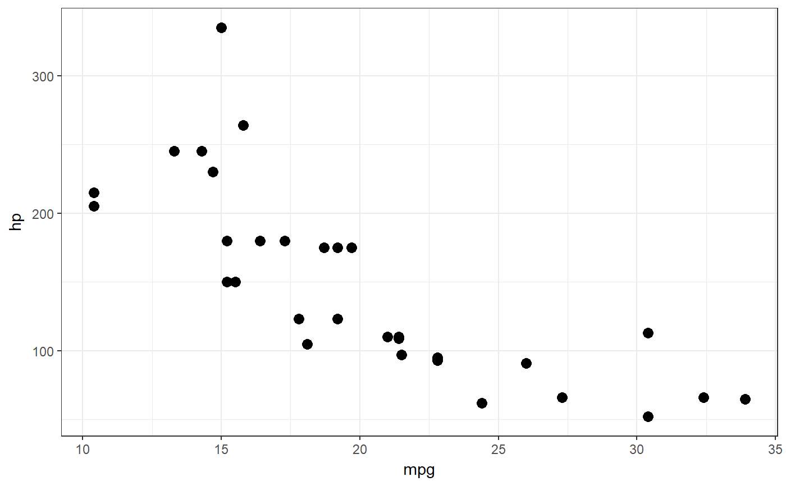
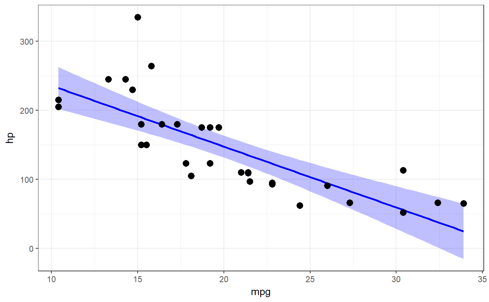

This function is intended to provide a very easy interface to generating pretty (and pretty versatile) ggplot scatter plots.
scatterPlot(x, y, pointsize = 3, theme = theme_bw(), regrLine = FALSE, regrCI = FALSE, regrLineCol = "blue", regrCIcol = regrLineCol, regrCIalpha = 0.25, width = 0, height = 0, position = "identity", xVarName = NULL, yVarName = NULL, ...)
| x | The variable to plot on the X axis. |
|---|---|
| y | The variable to plot on the Y axis. |
| pointsize | The size of the points in the scatterplot. |
| theme | The theme to use. |
| regrLine | Whether to show the regression line. |
| regrCI | Whether to display the confidence interval around the regression line. |
| regrLineCol | The color of the regression line. |
| regrCIcol | The color of the confidence interval around the regression line. |
| regrCIalpha | The alpha value (transparency) of the confidence interval around the regression line. |
| width | If |
| height | If |
| position | Whether to 'jitter' the points (adding some random noise to change their location slightly, used to prevent overplotting). Set to 'jitter' to jitter the points. |
| xVarName, yVarName | Can be used to manually specify the names of the variables on the x and y axes. |
| … | And additional arguments are passed to |
Note that if position is set to 'jitter', unless width and/or height is set to a non-zero value, there will still not be any jittering.
A ggplot plot is returned.
geom_point, geom_jitter, geom_smooth
### A simple scatter plot scatterPlot(mtcars$mpg, mtcars$hp);### The same scatter plot, now with a regression line ### and its confidence interval added. scatterPlot(mtcars$mpg, mtcars$hp, regrLine=TRUE, regrCI=TRUE);